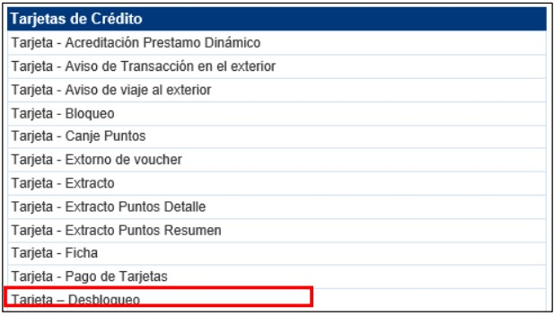
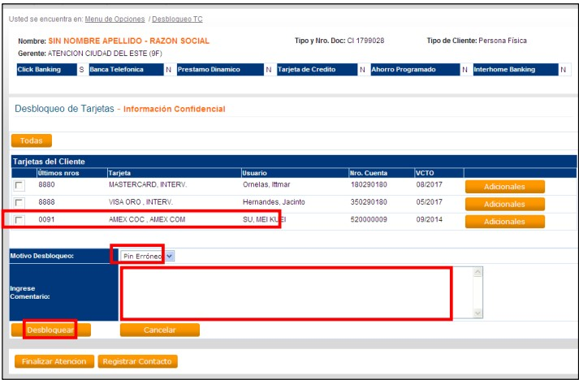
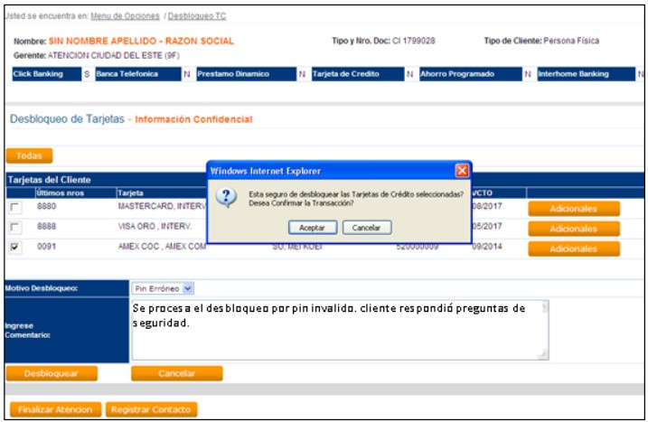
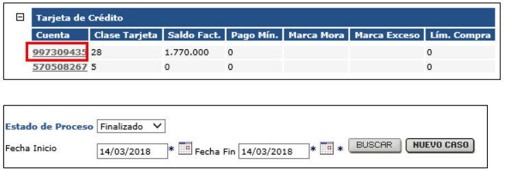
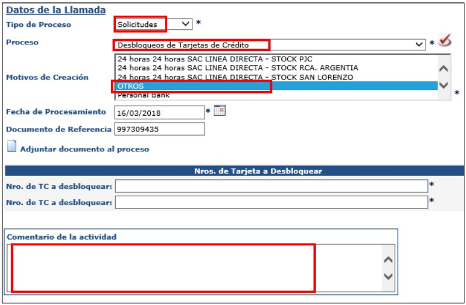
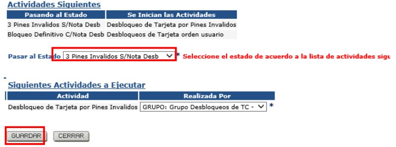
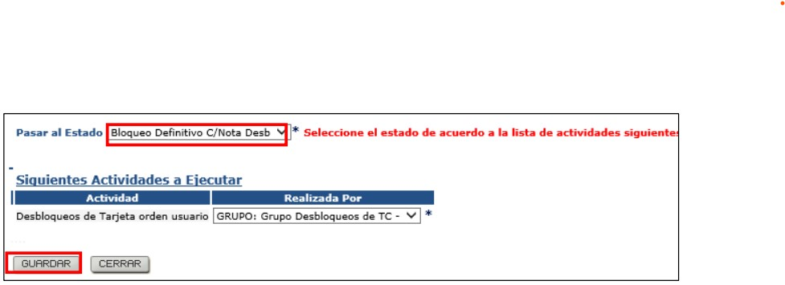
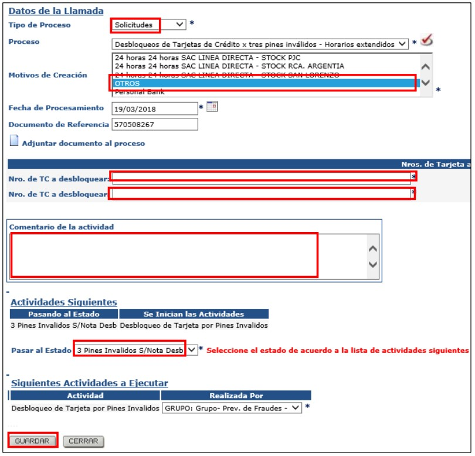

Requisitos:
El bloqueo no debe superar los 6 meses.
Plazo: desbloqueo por Pin inválido/ mes de nacimiento: Inmediato
El sistema automáticamente posee un filtro de seguridad, es decir, sólo se podrán procesar tres desbloqueos consecutivos en un mismo día para un cliente, sí vuelve a bloquear, ya no será posible el desbloqueo. El sistema no permitirá seleccionar la tarjeta.
Pasos a seguir para desbloqueo por Pin invalido/ mes de nacimiento

Obs. Aparecerán las tarjetas del cliente, con sus respectivos adicionales. (Al presionar el botón adicional estará listando las tarjetas correspondientes a esa cuenta si existiese)


Pasos a seguir por contingencia: En caso de que SAC.com no funcione



Pasos a seguir para desbloqueo por Orden Usuario/ Administrativo

Desbloqueos de tarjetas de crédito x tres pines inválidos (Fines de semana) y excepcionalmente en caso de que SAC.com no funcione a partir de las 17:30 a 08:30 de Lunes a Viernes.
